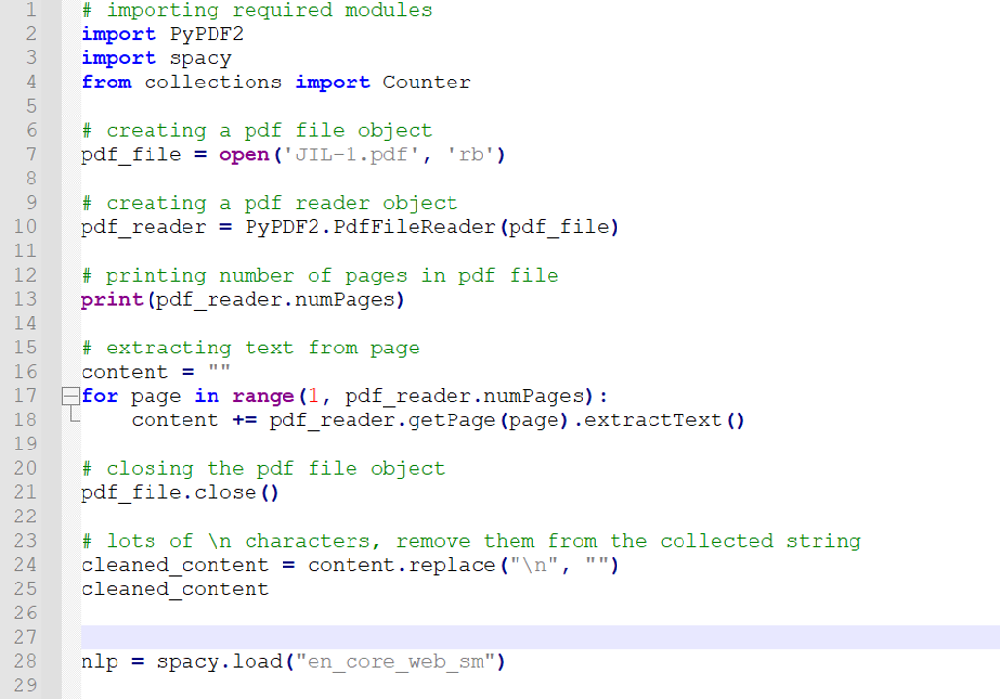
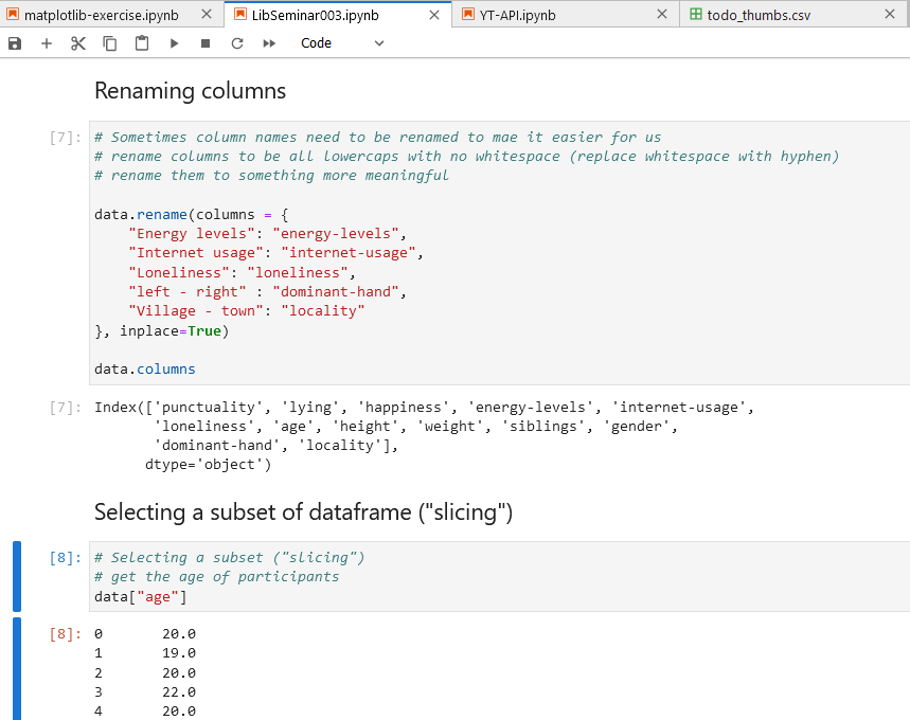
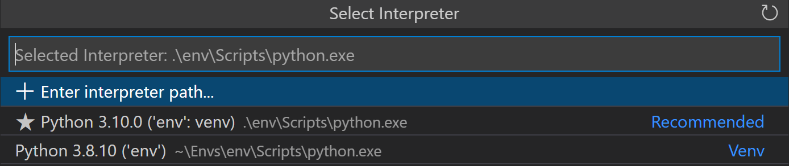
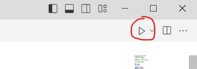

Introduction to Python
Welcome!
Preamble
About me:
Librarian, Research & Data Services team, SMU Libraries.
Bachelor of IT, MSc in Info Studies.
Have been with SMU since the pandemic era (2021).
About this workshop:
Live-coding format; code along with me!
Goal of workshop: to give you enough fundamentals (at least to the point where ChatGPT can’t bluff you so easily) and confidence to explore python on your own.
Comes with 3 quizzes that you can do at home - one quiz after each session, except for the last one.
Don’t be afraid to ask for help! We are all here to learn
About the workshop
Live coding & lots of hands-on
Take-home quiz after session 1, 2, and 3 to reinforce the learning - Link will be put on the course website.
Only for session 4: a small group activity at the second half of the session.
Choose an economic indicator from Federal Reserve Economic Data (FRED) e.g. Civilian Unemployment Rate.
Apply your Python knowledge to create a “storyboard” with visualizations to derive your economic outlook.
Overview for today
Introduction to Visual Studio
Introduction to Python - objects, values, and types
Handling Lists
Handling Loops and Conditionals
Why Python?
Q: What is Python, actually?
A: Python is a general-purpose programming language used for a wide variety of applications. Website, games, CAD applications, web applications, AI, etc.
Q: Why should I learn Python?
A: It’s one of the most popular programming language and the most dominant language in AI, ML, and data analytics field. It’s a useful skill to know if you plan to go into those fields or anything adjacent.
How do you run python?
If it’s a .py file…
A regular python file.
A plain text and contains just python codes
Can be edited and run on Visual Studio Code, PyCharm, SPyder, etc or the terminal/command prompt.
If it’s a .ipynb file…
ipynb stands for Interactive Python Notebook file
Contains the notebook code, the execution results and other internal settings in a specific format
Can be edited and run on Jupyter Notebook/Lab, Google Colab, and also Visual Studio (with the Jupyter Notebook extension)
What’s .py and .ipynb??
If it’s a .py file…

If it’s a .ipynb file…

Why the different file types?
If it’s a .py file…
For “production” uses e.g., creating apps, industrial deployments
Executing the file will run all the codes contained inside the file.
If it’s a .ipynb file…
Used a lot for academic / scientific purposes; great for quick experiments or teaching / presentation.
Codes will be executed on per-block basis (we will see this in action later on)
Getting Started: VS Code Workspace and Tour
(Suggested) structure of workspace directory
In your laptop, navigate to where you usually keep your files, and create a folder called
2024-09-python-workshop. This folder will be our “workspace” where we keep our scripts and data files.Inside your workspace folder, create the following sub-folders:
data- we will save our raw data here. It’s best practice to keep the data here untouched.data-output- if we need to modify raw data, store the modified version here.fig-output- we will save all the graphics we created here!
Start VS Code.
Go to
File>Open Folder.Open the
2024-09-python-workshopfolder we just created.
Best practice: Virtual Environment
Virtual environment helps us to ensure that any packages we install will be isolated from other environments, including the global interpreter. This helps prevent issues that can occur due to conflicting package versions - especially useful for reproducibility!
Open the Command Palette (
Ctrl+Shift+Pon Windows -Cmd+Shift+Pon Macbook).Type Python: Create Environment, and select the command. Choose
Venv.

- Select the Python interpreter that we installed in the pre-workshop activity. Give VS Code a few minutes to setup the environment.

Create new file
Open the Command Palette (
Ctrl+Shift+Pon Windows -Cmd+Shift+Pon Macbook).Type Python: New Python File, and select the command.
Rename the file to
01-intro.py
Some basic glossary (for your reference)
- Objects
-
In Python, everything is an object. An object is a piece of data that can have attributes and methods associated with it.
- Value
-
The actual data stored in a variable or object. It can be a number, string, list, or any other data type.
- Variable
-
A value that has a name associated with it.
- Assign
-
To give a value to a variable. This is done using the equals sign (=).
- Function
-
A reusable block of code that performs a specific task. Functions can take inputs (arguments) and return outputs.
- Call
-
To execute or run a function. This is done by using the function name followed by parentheses.
- Arguments
-
Values passed to a function when it is called. These values are used by the function to perform its task.
- Options/Parameters
-
Variables defined in a function’s declaration that act as placeholders for arguments. They specify what kind of data the function expects to receive.
- Packages
-
Collections of related modules that extend Python’s capabilities. They can be installed and imported to add new functionalities within your workspace.
Section 1: Getting Started
Hands on session - Make sure to open the py file we just created.
Running your python code
Type the following in your .py file…
…and then click on the run button to run the script

You should see “Hello World!” and a 10 printed at the Terminal window at the bottom
Built-in functions
- Functions will typically have brackets
()at the end of their name. - Python has a built-in function called
print()that prints things as text. - Call the function (i.e., tell Python to run it) by using its name.
Section 2: Variables and assignment
What’s a variable?
Variables are names for values. # In Python, the = symbol assigns the value on the right to the variable on the left.
Once you declare a variable, you must assign value to it.
Variable names criteria:
- cannot start with a digit
- alphanumeric only (underscores are a-OK)
- case sensitive
- should be meaningful (e.g.
quarter1_growthinstead of justq1g)
On creating variables
Variables must be created before they are used.
If a variable doesn’t exist yet, or if the name has been mis-spelled, Python reports an error. e.g. if you try to simply declare a variable called name but didn’t assign any value to it, Python will not like that and reports an error!
Things we can do with variables
We can pass variables to functions, e.g. let’s pass the greetings variable to print() function. This should print out the value of greetings.
Hello World!
today's greetings: Hello World!We can also update the value contained inside a variable. Let’s try adding 10 to variable age.
You can also assign a variable value to another variable
Learning Check #1
What is the final value of variable position below?
What is the final value of variable country_1 below?
Section 3: Data Types and Conversion
Refresher: Quantitative Data Types in Econs and Social Sciences
Non-Continuous Data
- Nominal/Categorical: Non-ordered, non-numerical data, used to represent qualitative attribute. e.g. Country, Employment status
- Ordinal: Ordered non-numerical data. e.g. Nutri-grade ratings
- Discrete: Numerical data that can only take specific value (usually integers) e.g. Shoe size, clothing size
- Binary: Nominal data with only two possible outcome. e.g. pass/fail, yes/no, survive/not survive
Continuous Data
- Interval: Numerical data that can take any value within a range. It does not have a “true zero”. e.g. Temperature of 0 C does not represent absence of heat.
- Ratio: Numerical data that can take any value within a range. it has a “true zero”. e.g. annual income of 0 represents no income.
Basic data types in Python
- Integers (int): Whole numbers without a decimal point. Examples: 5, -3, 0
- Floating-point numbers (float): Numbers with a decimal point. Examples: 3.14, -0.5, 2.0
- Strings (str): Sequences of characters enclosed in quotes. Examples: “Hello”, ‘Python’
- Booleans (bool): Logical values representing
TrueorFalse. Examples: True, False - None: A special type representing the absence of a value
Why do I need to care about these data types?
Because a value’s data type determines what the program can do to it.
For example, the calculations below work on int data type
But the above operation won’t work on a string
However you can use “+” and “*” on strings
Converting data types to one another
Some data types need to be converted before we can do some operations on them i.e. this will give you an error.
Here is how you can convert the data types:
Take note of variables assignment placement
Take note of the execution order of your variables! They only change value when something is assigned to them.
public_holiday = 11 # initial value
new_holidays = public_holiday + 5
public_holiday = 10 # we update the variable
print("Public holiday:", public_holiday)
print("New holidays:", new_holidays) Public holiday: 10
New holidays: 16Updating the value of public_holiday will not auto-update the value of new_holidays.
Learning Check #2
What is the data type of each of this variable?
Section 4: Built-in Python functions
Arguments vs Parameters
- There are many built-in function that we can use, one of the common one is
round()which will round a float number to the nearest integer. - Some functions accept arguments, and we put them inside the brackets when we pass it to the function. It’s like telling the function “do what you’re supposed to do with this things I pass to you”.
formal definition, but often used interchangeably:
- arguments = the value passed to a function - in this case, 3.14
- parameters = the variable passed to a function
How do I find out more about a function?
- Some functions can take more than one arguments! we’ve seen this with
print()earlier. - If you’re not sure what kind of arguments are accepted, etc, use the
help()function. This example below should tell you more aboutround()once executed.
Section 5: Lists
More data types / structure
Other than the basic 4 types that we learned earlier, Python has more data structures where we can store multiple values in a single variable:
- Lists: Ordered, mutable (i.e. can be edited) sequences of elements. Examples:
[1, 2, 3],['a', 'b', 'c'] - Tuples: Ordered, immutable (i.e. cannot be edited once it is created) sequences of elements. Examples:
(1, 2, 3),('a', 'b', 'c') - Dictionaries (dict): Unordered collections of key-value pairs. Example:
{'name': 'John', 'age': 30} - Sets: Unordered collections of unique elements. Example:
{1, 2, 3}
We will not be covering all of the above, only list and dictionaries (for session 4)
When lists would be useful
Scenario: We want to track Singapore’s GDP year-over-year (YoY) growth from 2024 to 2018.
- A list helps us store multiple years of data in one place, making it efficient.
- Without a list, we’d need dozens of separate variables for each year, making it harder to analyze trends.
- Using a list, we can easily manage and analyze the data for all the years together.
You can also initialize an empty list to fill later
Check number of items in a list
As a good first step, it’s good to check the number of items you have in your list!
Retrieve a single item from a list
Sometimes you don’t need the entire list. To retrieve a single value from a list, simply specify their index number enclosed in square brackets
- Remember that index starts from 0 instead of 1.
- So if you want to retrieve the fourth item (2021’s growth rate), the index will be 3.
print('GDP growth rate in 2023 Q1 (1st item):', quarterly_gdp_growth[0])
print('GDP growth rate in 2024 Q2 (6th item):', quarterly_gdp_growth[5])GDP growth rate in 2023 Q1 (1st item): -2
GDP growth rate in 2024 Q2 (6th item): 1.1If we put an index number that’s larger than actual number of items, python will give us an error!
Retrieve multiple items from a list: the syntax
Slicing allows you to extract a portion of the list by specifying a range of indices. The basic syntax for slicing is:
startis the index where the slice starts (inclusive)endis the index where the slice ends (exclusive)- If
startis omitted, the slice begins from the start of the list - If
endis omitted, the slice goes to the end of the list stepis optional; it determines how many items to skip
Retrieve multiple items from a list: in action
Specifying the start and end:
Omitting the end index:
From Q3 2023 onwards: [2.8, 2.6, 7.3, 1.1, 3.4]Omitting the start:
If we put a negative index, python list will count from the end instead of the beginning!
Stepping value in a list
You can also use a step value to skip items!
It is particularly useful if you need to reverse a list.
Updating the value of items inside a list
List values can be replaced by simply assigning a new value to them! Let’s update the growth rate for 2023 Q3 (index 2) with the correct figure.
Appending items to a list
Let’s append a new data of 3.2% growth that we get for 2024 Q3 to the list. Appending will put this new item at the end of the list.
print('GDP growth rates initially:', quarterly_gdp_growth)
quarterly_gdp_growth.append(3.2)
print('GDP growth rates after adding 2024 Q3 prediction:', quarterly_gdp_growth)GDP growth rates initially: [-2, -5.8, -2.8, 2.6, 7.3, 1.1, 3.4]
GDP growth rates after adding 2024 Q3 prediction: [-2, -5.8, -2.8, 2.6, 7.3, 1.1, 3.4, 3.2]Adding data to a specific position in a list
Let’s add data to the start of the list! The data is growth for 2022 Q4, which was 9.4%.
print('GDP growth rates initially:', quarterly_gdp_growth)
1quarterly_gdp_growth.insert(0, 9.4)
print('GDP growth rates after adding 2022 Q4:', quarterly_gdp_growth)- 1
- The first parameter is the index position of where we want this new value to be. The second parameter is the actual value we’d like to insert.
GDP growth rates initially: [-2, -5.8, -2.8, 2.6, 7.3, 1.1, 3.4, 3.2]
GDP growth rates after adding 2022 Q4: [9.4, -2, -5.8, -2.8, 2.6, 7.3, 1.1, 3.4, 3.2]Removing items from a list
Let’s remove the two items we added previously!
There are two ways to remove items: using del or .pop() method.
print('GDP growth rates initially:', quarterly_gdp_growth)
1del quarterly_gdp_growth[0]
2quarterly_gdp_growth.pop()
print('GDP growth rates after removing projection:', quarterly_gdp_growth)- 1
-
with
del, you need to specify the index of the items you’d like to remove - 2
-
pop()will remove the item at the end of the list.
GDP growth rates initially: [9.4, -2, -5.8, -2.8, 2.6, 7.3, 1.1, 3.4, 3.2]
GDP growth rates after removing projection: [-2, -5.8, -2.8, 2.6, 7.3, 1.1, 3.4]Calculations with List
Let’s say we want to calculate the average quarterly gdp growth:
Various data types in a single list
You can include values of different types in a list, though for GDP data we’ll stick to numbers!
Learning Check #3
Write a code to complete the following tasks:
- Write a code to print the growth rate for 2023 Q4 (remember, it’s the 5th item but index 4)
- Write a code to print the growth rates for the first three quarters of 2023
- Add a projected growth rate of 3.3 and 3.6 the next two quarters at the end of the list
Section 6: Loops
Automate stuff with loop!
Scenario: We have Singapore’s Quarterly GDP growth rates from 2023 Q1 to 2024 Q2, and we want to print them in this format: Quarterly GDP growth: 5%
Manually printing out the items
print("Quarterly GDP growth:", quarterly_gdp_growth[0], "%")
print("Quarterly GDP growth:", quarterly_gdp_growth[1], "%")
print("Quarterly GDP growth:", quarterly_gdp_growth[2], "%")
print("Quarterly GDP growth:", quarterly_gdp_growth[3], "%")
print("Quarterly GDP growth:", quarterly_gdp_growth[4], "%")
# and so on...
# can you imagine doing this for 100++ items?Quarterly GDP growth: -2 %
Quarterly GDP growth: -5.8 %
Quarterly GDP growth: -2.8 %
Quarterly GDP growth: 2.6 %
Quarterly GDP growth: 7.3 %With for loop
Quarterly GDP growth: -2 %
Quarterly GDP growth: -5.8 %
Quarterly GDP growth: -2.8 %
Quarterly GDP growth: 2.6 %
Quarterly GDP growth: 7.3 %
Quarterly GDP growth: 1.1 %
Quarterly GDP growth: 3.4 %
Quarterly GDP growth: 3.3 %
Quarterly GDP growth: 3.6 %As you can see, we can achieve the same thing (or more) with less code to type with for loop.
Anatomy of a loop
Anatomy of loops explained using the example above:
- 1
-
growthis the loop variable, representing the value that changes with each iteration of the loop. You can think of it as the “current item” being processed. Meanwhile,quarterly_gdp_growthis the collection that the loop iterates over. The loop statement also ends with a colon:. - 2
-
print("Quarterly GDP growth:", growth, "%")is the body of the loop, specifying the action to take for each item in the collection. The body of the loop must be indented.
More examples: using range()
Below is a loop that will print out numbers from 1 to 6:
More examples: using enumerate()
We can use enumerate() to loop not only the items inside a list, but also the index position of each item in the list!
Let’s say we want to re-format our printout to 1) Quarterly GDP growth: 5%
for index, item in enumerate(quarterly_gdp_growth):
print(f"{index + 1}) Quarterly GDP growth: {item}%")1) Quarterly GDP growth: -2%
2) Quarterly GDP growth: -5.8%
3) Quarterly GDP growth: -2.8%
4) Quarterly GDP growth: 2.6%
5) Quarterly GDP growth: 7.3%
6) Quarterly GDP growth: 1.1%
7) Quarterly GDP growth: 3.4%
8) Quarterly GDP growth: 3.3%
9) Quarterly GDP growth: 3.6%Section 7: Conditionals (If-Else)
Automate decisions with conditionals!
Scenario: We have Singapore’s Quarterly GDP growth rates, and we want to categorize them as “Growth”, “Stable”, or “Decline” based on their values.
Without conditionals and for loops
print(quarterly_gdp_growth[0], "% - Category: Decline")
print(quarterly_gdp_growth[1], "% - Category: Decline")
print(quarterly_gdp_growth[2], "% - Category: Decline")
print(quarterly_gdp_growth[3], "% - Category: Growth")
print(quarterly_gdp_growth[4], "% - Category: Growth")-2 % - Category: Decline
-5.8 % - Category: Decline
-2.8 % - Category: Decline
2.6 % - Category: Growth
7.3 % - Category: GrowthWith conditionals and for loops
for growth in quarterly_gdp_growth:
if growth > 2:
category = "Growth"
elif -2 <= growth <= 2:
category = "Stable"
else:
category = "Decline"
print(f"{growth}% - Category: {category}")-2% - Category: Stable
-5.8% - Category: Decline
-2.8% - Category: Decline
2.6% - Category: Growth
7.3% - Category: Growth
1.1% - Category: Stable
3.4% - Category: Growth
3.3% - Category: Growth
3.6% - Category: GrowthWhy conditionals + for loops is great
- Automated categorization based on values - no manual intervention needed!
- Easily adjustable criteria (just change the numbers in the if-elif-else statements)
- Works for any number of data points - again, no manual intervention needed!
- Makes the code more readable and maintainable
Let’s break down the anatomy of conditionals first!
Anatomy of Conditionals
Also called if-else structure, it looks like this at the very basic level:
gdp_growth = 2.5
1if gdp_growth > 0:
2 print("The economy is growing.")
3else:
4 print("The economy is not growing.")- 1
- The if statement starts with the keyword ‘if’, followed by a condition, and ends with a colon ‘:’
- 2
- The body of the if statement is indented. This line of code will be run if the condition is fulfilled
- 3
- The else clause is optional, starts with ‘else’, and ends with a colon ‘:’
- 4
- The body of the else clause is also indented, and only run if the condition is NOT fulfilled
The economy is growing.Multiple conditions
Sometimes we have multiple conditions that we want to check! We can use elif (stands for else-if) to add the conditions. You can have multiple elif clauses.
Multiple conditions with Boolean operators
In some cases, we can’t split the conditions among multiple elifs. For example, we may want to check gdp_growth and inflation rate to determine the economic state.
gdp_growth = 1.5
inflation = 2.0
1if gdp_growth > 0 and inflation < 3:
print("The economy is in a good state.")
2elif gdp_growth > 0 or inflation < 3:
print("The economy is in a mixed state.")
else:
print("The economy needs attention.")- 1
-
andrequires both conditions to beTrue - 2
-
orrequires at least one condition to beTrue
The economy is in a good state.Multiple conditions - Order does matter!
Assuming variable growth has the value of 10, the conditionals below will give us the wrong result.
growth = 10
if growth > 0:
print(f"{growth}% is a moderate growth")
elif growth > 5: # This will never be reached for growth > 1
print(f"{growth}% is a strong growth")
else:
print(f"{growth}% is a negative growth")10% is a moderate growthThis ordering would give the correct result:
Nested conditionals
For a more complicated conditionals, you can put a conditional inside another! Be careful with indentation to ensure correct nesting!
gdp_growth = 2.5
unemployment = 4.0
1if gdp_growth > 0:
2 if unemployment < 5:
print("Strong economic performance.")
else:
print("Growing economy, but high unemployment.")
else:
print("Economic challenges ahead.")- 1
- “outer” conditional.
- 2
- “inner” conditionals. Note the indent for this statement! This conditional will be run only if the outer conditions are fulfilled.
Strong economic performance.Conditionals and For loops combi
As seen from the first example of this section, we can combine for loops with conditionals
for growth in quarterly_gdp_growth:
if growth > 2:
category = "Growth"
elif -2 <= growth <= 2:
category = "Stable"
else:
category = "Decline"
print(f"{growth}% - Category: {category}")-2% - Category: Stable
-5.8% - Category: Decline
-2.8% - Category: Decline
2.6% - Category: Growth
7.3% - Category: Growth
1.1% - Category: Stable
3.4% - Category: Growth
3.3% - Category: Growth
3.6% - Category: GrowthConditionals and For loops combi: counting occurence
Other ways for loops and conditionals can be used is for when we want to count occurence. Let’s say we want to keep track how many growths and contractions have happened for the past quarters.
1growth_periods = 0
decline_periods = 0
for rate in quarterly_gdp_growth:
if rate > 0:
2 growth_periods += 1
elif rate < 0:
decline_periods += 1
print("Growth periods:", growth_periods)
print("Decline periods:", decline_periods)- 1
- set the counters, one to keep track of growth and the other one to keep track of declines
- 2
- increase the counters when conditions were met.
Growth periods: 6
Decline periods: 3Learning Check #4
Write a script that identifies the highest and lowest growth quarters (5 mins)
Even more data types
We will explore these in the upcoming sessions!
DateTime
NumPy’s Arrays
Panda’s DataFrame & Time series DataFrame
End of Session 1!
We have covered: variables, data types, list, loop, and conditional

Comments
Use comments to add a layer of documentation to your code. E.g., explain what a block of code does, etc.
Comments always start with a hashtag #
Feel free to use this method to add your own notes throughout the workshop!